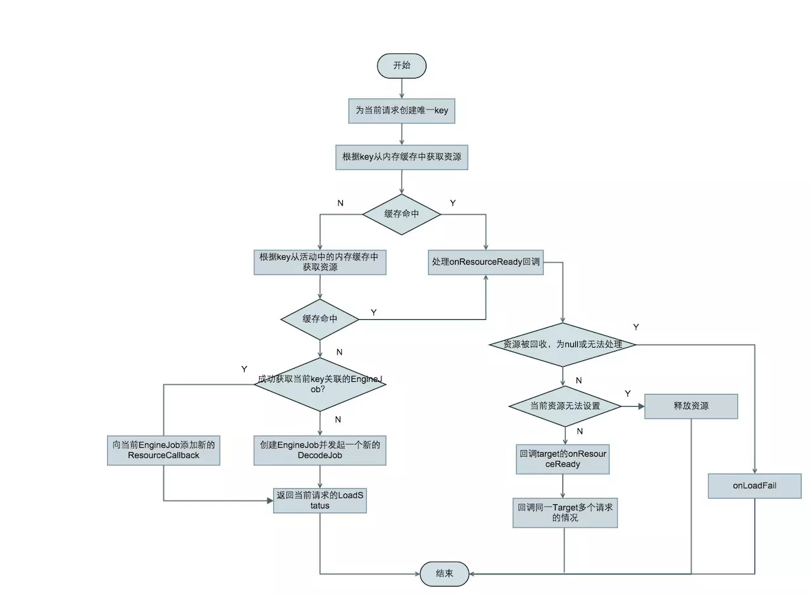
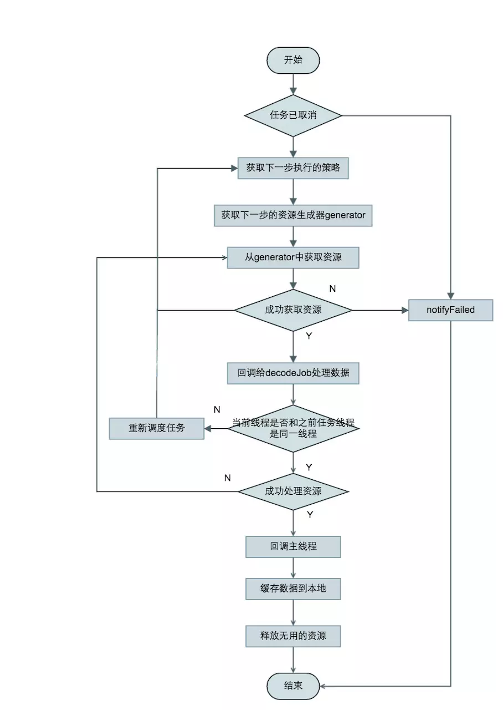

with方法
根据传入的context分为
- Application对象，和应用程序的生命周期同步
- 非Application对象，使用隐藏Fragment（RequestManagerFragment）得到生命周期
load方法
返回默认DrawableTypeRequest对象。指定asBitmap、asGif时分别返回BitmapTypeRequest对象、GifTypeRequest对象。
into方法
RequsetBuilder的into方法中创建了buildRequest，创建请求，调用了Engine的load方法，最后设置target。
Engine
任务创建，发起，回调，管理存活和缓存的资源
load()
1 | public LoadStatus load( |
load调用处理流程图
DecodeJob是整个任务的核心部分。使用了LruCache、弱引用二级内存缓存和DiskLruCache磁盘缓存。

EngineJob
调度DecodeJob，添加，移除资源回调，并notify回调。
start(DecodeJob decodeJob)
通过线程池调度一个DecodeJob任务。
MainThreadCallback
实现了Handler.Callback接口，用于Engine任务完成时回调主线程。
DecodeJob
实现了Runnable接口，调度任务的核心类，整个请求的繁重工作都在这里完成：处理来自缓存或者原始的资源，应用转换动画以及transcode。负责根据缓存类型获取不同的Generator加载数据，数据加载成功后回调DecodeJob的onDataFetcherReady方法对资源进行处理。
